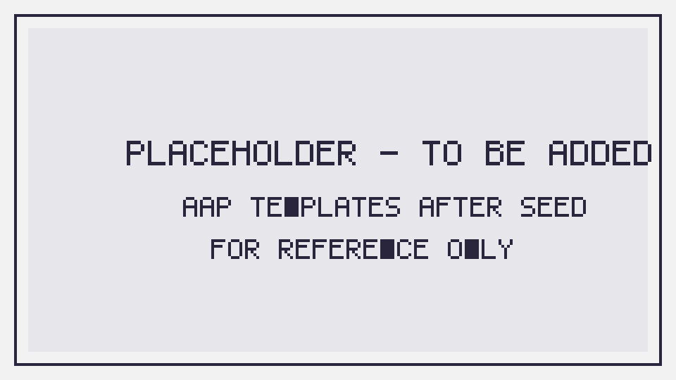
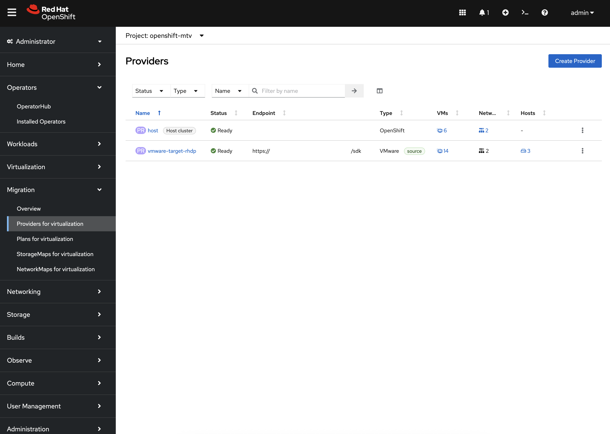
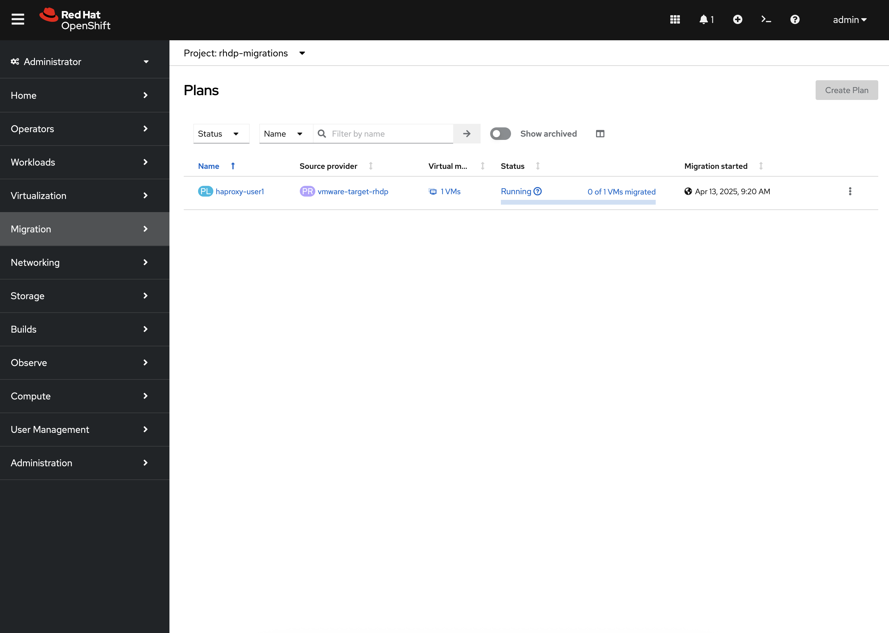
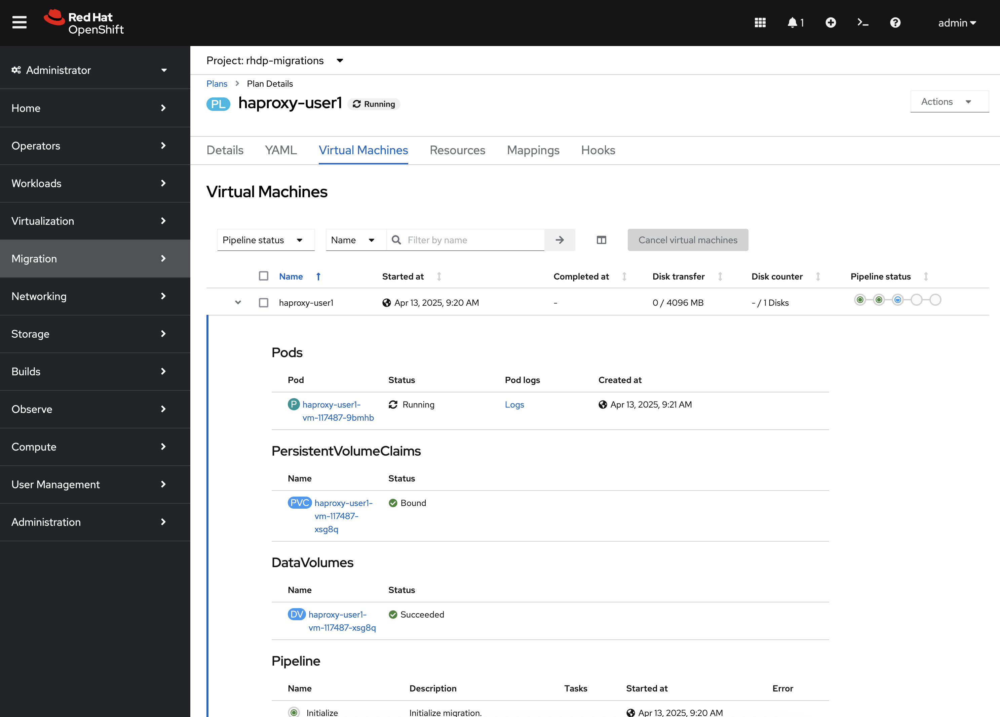
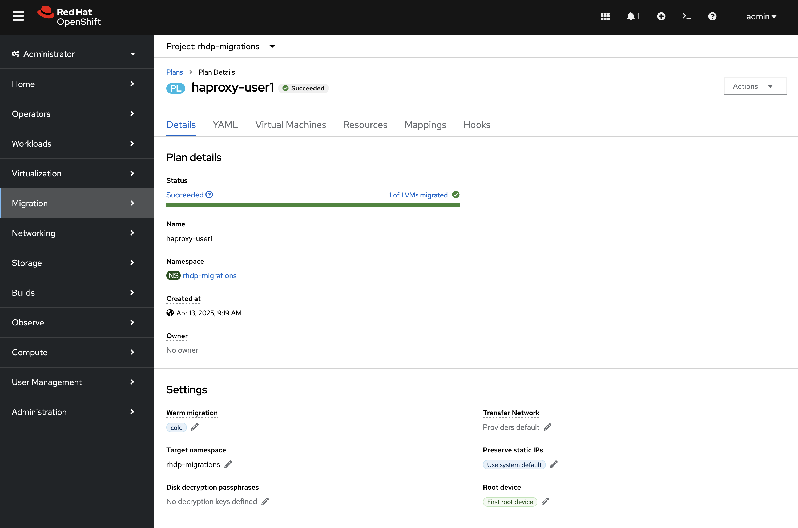
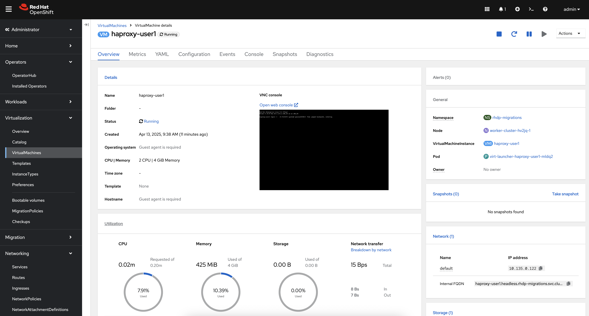

Disclaimer: Version 2 is currently under active development and unreleased.
Features and documentation are subject to change, and stability is not guaranteed. Please refer to Version 1 for fully supported features.
Quick start: first migration
This page is a run sheet for a Services Consultant on a customer bring-your-own environment. Target: finish your first Migration Factory sitting in about four hours, including environment setup. It is not a second copy of the journey — follow the steps here; open the linked journey pages when you need the full procedure.
Formats
-
Web: this Antora page (always current).
-
PDF: use Export PDF at the top. The PDF keeps the same ordered steps and the same links into the documentation on this site. There is no separate offline PDF artifact to download.
What you will finish
With basic OpenShift Virtualization knowledge (Ansible and MTV may be new):
-
Confirm the customer environment is ready for Migration Factory (Gate 0).
-
Stand up Migration Factory on that environment (inventory → validate → seed).
-
Migrate one VM from VMware to OpenShift Virtualization using MTV + AAP + Migration Factory.
-
Validate: MTV plan Succeeded, VM Running, guest has an IP, ping works, and an app check you define when ping is not enough.
Which guest and plan type?
Migration Factory and MTV support more than one guest OS and plan type. For a first sitting, use a cold plan (source powered off). Cold finishes in one MTV Start and is easier to reason about than warm (precopy + later cutover).
Pick one of these recommended first paths:
| Path | Guest | Plan |
|---|---|---|
A (default) |
RHEL 8 or RHEL 9 |
Cold |
B |
Windows Server (supported by MTV for your version) |
Cold |
Same factory steps for A and B. Differences are guest prep, how you prove the app after cutover, and MTV/OS prerequisites (VMware Tools / virtio / guest agent). Follow MTV documentation for guest OS support on your MTV version.
Other combinations (after the first sitting)
| Need | Where to go |
|---|---|
Warm migration (source stays up until cutover) |
Set |
RHV / other sources |
Same journey after the provider matches the source; see Prerequisites and Configure providers. |
Multi-VM wave |
Same wave page with more |
Estimated duration (~4 hours)
Use this to plan the engagement. Disk size, network, and how complete the platform already is will move the clock; Gate 0 failures usually cost more than the migration itself.
| Phase | Budget | Focus |
|---|---|---|
Access, pick VM, Gate 0 |
~45 min |
Versions, one guest (RHEL or Windows), pass every Gate 0 check. |
Prepare + seed |
~75 min |
Inventory → validate → seed AAP. |
Providers + maps |
~30 min |
One VMware→OpenShift pair; maps Ready. |
Guest prep + wave + migrate |
~60–90 min |
Power off (cold), one-VM plan, MTV Start → Succeeded. |
Validate + feedback |
~30 min |
Start VM, IP, ping, app check if needed; Support if blocked. |
Suggested steps
Complete these in order. Do not skip Gate 0.
-
Confirm access and version floors, then pick the RHEL or Windows VM.
-
Pass platform Gate 0 (OpenShift Virtualization, MTV, AAP reachability, EE). Skip the inventory checkbox until the inventory file exists.
-
Finish prepare: inventory → re-check the inventory Gate 0 item → Validate your environment → seed AAP.
-
Configure providers, then storage and network maps.
-
Prepare the guest, power it off (cold), define a one-VM cold wave, start the plan in MTV, wait for Succeeded.
-
Start the VM on OpenShift Virtualization, confirm IP, ping, then your app check if ping is not enough.
-
Send feedback through Support if something blocked you.
Assumptions
-
Audience: Services Consultant; OpenShift Virtualization basics; may be new to AAP and MTV.
-
Environment: Customer BYO (no shared lab for this guide).
-
Source: VMware vSphere via vCenter or a standalone ESXi host (MTV 2.6+ supports Endpoint type ESXi /
settings.sdkEndpoint: esxi). You need one RHEL or Windows VM you may power off for a cold plan. If you only reach the hypervisor through a bastion, run Gate 0oc/curlchecks from that bastion (or any host that can reach the OpenShift API, AAP, and the ESXi/vCenter SDK URL). -
VDDK: Build and set a VDDK init image on the VMware provider before the first cold plan (Configure the inventory —
vddk.image). Without it, cold copy on standalone ESXi often fails in ConvertGuest (nbdkit/ HTTP range not supported), andskipGuestConversionstill requires VDDK for raw copy. Use an image you are entitled to build — not an internal RHDP/demo tag. -
Destination: OpenShift cluster with OpenShift Virtualization and MTV already installed. Confirm
oc whoami --show-serveris that cluster — not a leftover workshop kubeconfig on your laptop. -
Automation: Ansible Automation Platform available (existing or deployed as part of prepare). On AAP 2.5+, the controller REST API is under
/api/controller/v2/(not/api/v2/).
Version floors from the enablement story (confirm against the customer platform and current collection support):
-
vSphere 7.0+
-
OpenShift 4.18+
-
AAP 2.5+
-
MTV 2.6+
Full access and credential checklist: Prerequisites.
Pick the VM
Choose one VM (RHEL or Windows) that:
-
You may power off for a cold migration.
-
Has a stable name you will put in the wave request.
-
Can answer ping from a host you will use after cutover (or will after you start it on OpenShift Virtualization).
-
Has an app check you can describe if ping alone is not enough for the customer (HTTP URL, Windows service name, SSH command, and so on).
-
Is not the only path to a critical production service for this sitting.
On vSphere, note the VM name (and folder/path if you will identify it that way). You will power it off before you start the plan.
Gate 0 — ready for Migration Factory?
Pass every checkbox before you continue. If any item fails, stop, fix it, and re-check. Do not seed to paper over a missing operator. This gate matches Validate your environment; the commands below are a CLI path to the same checks.
Checklist
Platform (do these first; no inventory file required yet):
-
ocreaches the destination cluster (correct context / API URL) -
OpenShift Virtualization operator Succeeded; VM APIs exist
-
MTV operator Succeeded; Migration appears in the OpenShift console
-
You can log in to AAP (URL you will put in the inventory as
aap_hostname) -
Execution environment pull works for the Migration Factory EE image (laptop Podman or AAP registry credential)
After Building your inventory:
-
Inventory has the three groups, no leftover
changeme, andvm_sourcesnames match hosts
How to check each item
OpenShift API and context
Confirm you are talking to the customer destination before any operator checks:
oc whoami
oc whoami --show-serverExpect a successful identity and an API URL for this engagement. If DNS fails, the request times out, or the URL is a leftover workshop/sandbox, fix kubeconfig / oc login and stop — do not interpret empty oc get csv greps as “operators missing.”
OpenShift Virtualization
Logged in to the destination cluster:
oc get csv -A | grep -iE 'virt|kubevirt|openshift-virtualization'
oc api-resources | grep -i kubevirtExpect a Succeeded CSV (or equivalent) and VirtualMachine-related API resources.
MTV
oc get csv -A | grep -iE 'mtv|forklift|migration-toolkit'
oc get forkliftcontrollers.forklift.konveyor.io -AExpect a Succeeded CSV and a Forklift controller. In the console, confirm Migration lists Providers and Plans.
AAP login
Replace the hostname with your aap_hostname:
curl -kI "https://<aap_hostname>/"Expect an HTTP response (not a connection error). Then open the same URL in a browser and sign in with the account from the inventory.
On AAP 2.5+, you can also confirm the controller API (path is /api/controller/v2, not /api/v2):
curl -sk -u '<user>:<password>' "https://<aap_hostname>/api/controller/v2/ping/"Expect JSON that includes a version field.
Inventory file
Run this only after you have copied and filled the inventory from the collection sample (Building your inventory). From the directory that holds your inventory file:
grep -n 'changeme' inventory.yml || echo 'No changeme placeholders'
grep -E '^\s*(migration_aap|migration_clusters|vm_sources):' inventory.ymlExpect no changeme values you still need to replace, and the three group names present. Confirm by eye that every name under each cluster’s vm_sources exists as a vm_sources host.
Execution environment
Prefer the path you will actually use for seed:
-
Seed / jobs from AAP: configure the registry credential on AAP and confirm a test job can pull
quay.io/redhat-cop/openshift-virtualization-migration-ee:latest. That satisfies this Gate 0 item without local Podman. -
Laptop Podman (optional): on macOS, ensure the Podman machine is running (
podman machine startif the socket connection is refused), then:
podman login quay.io/redhat-cop
podman pull quay.io/redhat-cop/openshift-virtualization-migration-ee:latestQuay credentials for that repository come from the Bitwarden collection Migration Factory. Create or request your Red Hat Bitwarden account with KB0010984 and Request help if needed, then join the migration-factory Google Group. Details: Migration Factory prerequisites.
When every platform box is checked, continue to prepare. After the inventory file exists, check the inventory box, then Validate your environment, then Seeding Ansible Automation Platform.
Run the quick start
1. Prepare the environment
Work through Preparing your environment in order, stopping after validate:
-
Migration Factory prerequisites (only if you still seed or install AAP from a laptop)
-
OpenShift — Virtualization and MTV already installed
-
Ansible Automation Platform or Deploying Ansible Automation Platform if AAP is not installed yet
-
Validate your environment — Gate 0 again on the finished inventory
2. Seed Ansible Automation Platform
-
Put Quay pull credentials (Bitwarden Migration Factory) on the
migration_aaphost asaap_execution_environment_username/aap_execution_environment_password. -
On AAP 2.5+, mint a gateway token and set
aap_tokenonmigration_aap(do not rely on/api/v2/tokens/— it 404s). See Seeding Ansible Automation Platform. -
Run the seed playbook from a host that reaches AAP (bastion is fine). If
EE:latestlacksvmf_seed_aap, mount the v2 git checkout into the EE as shown on the seed page. -
In AAP, confirm the Migration Factory templates exist: MTV Provider, MTV Maps, MTV Plans, and MTV Migrate.
-
Open Jobs after later steps — you will use that list as proof the sitting used AAP (not only a local
ansible-navigatorrun).

|
Lab helper
From this documentation repository, after |
3. Providers and maps (AAP job templates)
After seed, run these steps from AAP (Automation Execution → Templates). The Quick Start sitting is proven by successful AAP jobs (Provider → Maps → Plans) plus MTV Start. Lab validation also confirmed ansible-navigator can create Plans when the v2 collection is mounted into the EE, but that is a debug/bootstrap path — do not skip AAP for the consultant run sheet.
|
Execution environment must include the v2 roles
|
-
Confirm inventory hosts and credentials exist: source host in
vm_sources, target inmigration_clusters, plus Migration Factory - Source Environment and Migration Factory - Target Environment credentials. On launch, attach both credentials when the template asks. -
Put VDDK on the source inventory host (
vddk.image, and registry username/password if the image is private). Create a matching docker-registry pull secret inopenshift-mtvif needed. See Configure the inventory. -
For standalone ESXi, pass Provider extra vars so MTV uses the ESXi endpoint and VDDK init image:
source_name: <vm_sources host name> # e.g. esxi-lab
target_name: <migration_clusters host> # e.g. ocp-lab
mtv_provider_provider_override:
settings:
sdkEndpoint: esxi
vddkInitImage: registry.example.com/vddk:8.0 # image you are entitled to build-
Launch OpenShift Virtualization Migration - MTV Provider. Wait until the AAP job is Successful and the Provider is green in MTV.

-
Launch OpenShift Virtualization Migration - MTV Maps with survey/extra vars
source_nameandtarget_name(same inventory host names). Wait until the job is Successful and both NetworkMap and StorageMap are Ready.
Full procedure: Configure providers, Configure storage and network maps.
4. Prepare the guest for a cold plan
-
Preparing VMs for migration — maintenance window; VMware Tools (and Windows virtio / guest drivers as required by MTV).
-
On vSphere / ESXi, power off the VM. Cold plans expect the source off for the cutover sitting.
5. Define a one-VM cold wave (AAP MTV Plans)
-
In AAP, launch OpenShift Virtualization Migration - MTV Plans.
-
Attach the Source + Target credentials. Set
source_name/target_name(inventory host names) and the wave request (MTV names):
source_name: <vm_sources host name>
target_name: <migration_clusters host>
mtv_plans_migration_request:
source: <mtv-provider-name> # RFC 1123 form after Configure providers
destination: host
target_namespace: <project-for-vms>
network_map: <source>-host # or the names from Create maps
storage_map: <source>-host
verify_plans_ready: true
plan_name: quickstart-aap-cold-01
type: cold
plan_overrides:
preserveStaticIPs: false # avoid warn when mapping to pod network
vms:
- name: <vm-name>-
Wait until the AAP job is Successful. Confirm the Plan CR is Ready in Migration → Plans for virtualization.

|
Survey |
6. Start the migration in MTV
-
In the OpenShift console, open the Ready plan → Start. That creates the Migration CR and copies disks. Cold finishes in the same run (no separate cutover).
-
Optional: launch OpenShift Virtualization Migration - MTV Migrate with
source_name,target_name,mtv_migrate_plan_name, andmtv_migrate_plan_namespace. Attach Source + Target credentials. Treat console Start as the cutover you rely on for this guide; confirm in the job log whether your collection version also creates the Migration CR.

-
In AAP Jobs, you should see successful Provider, Maps, and Plans (and optionally Migrate). Wait until the plan is Succeeded in MTV.

7. Validate
-
Plan status Succeeded.
-
Open the VirtualMachine in
target_namespace. MTV leaves it Stopped — Actions → Start → wait until Running.

-
Confirm the guest has an IP (console, guest agent, or
oc/ VM details), then ping it from a host that can reach that address:oc get vmi -n <target-namespace> ping -c 3 <guest-ip>Success on ping means the NIC and route you mapped are good enough for connectivity.
-
App check: if ping is enough for this engagement, you are done with validation. If the customer needs proof the workload is up, run an app check you define for that VM — for example:
-
RHEL: SSH and a service or HTTP check (
curl -I http://<guest-ip>/,systemctl is-active <service>). -
Windows: RDP or WinRM reachability, or confirm a named service is running inside the guest.
-
Any guest: the customer’s own smoke test written down before you start the plan.
Record what you ran and the result. If ping fails, fix network map / NAD / firewall before you treat an app check as meaningful.
-
8. Close the sitting (optional)
-
Closing the migration wave and Archiving the plan when the customer process requires it.
Done when
-
Gate 0 passed before seed
-
AAP jobs Successful for MTV Provider, MTV Maps, and MTV Plans (visible under Jobs)
-
Plan Started from the OpenShift console (not the AAP Migrate template)
-
One VMware VM (RHEL or Windows) cold-migrated via MTV + AAP + Migration Factory
-
MTV plan Succeeded
-
VM Running on OpenShift Virtualization with an IP
-
Ping succeeded
-
App check done (your definition), or documented that ping was enough for this sitting
Troubleshooting
Work the symptom that matches, then use the linked journey page for the long procedure.
Cannot reach the OpenShift API / wrong cluster
-
Run
oc whoamiandoc whoami --show-server. -
If you see DNS errors, timeouts, or a workshop/sandbox URL that is not this customer,
oc loginto the destination (or select the correct kube context) and re-check. -
Only then re-run the Gate 0 Virtualization and MTV commands. Empty greps on a dead API are not proof that operators are missing.
Operator or MTV menu missing
-
Confirm you are on the destination cluster (
oc whoami --show-server,oc whoami --show-console). -
Re-run the Gate 0 OpenShift Virtualization and MTV commands.
-
In the console: Operators → Installed Operators — both must be Succeeded.
-
If APIs are missing, install or repair the operators before seed. See OpenShift.
Seed fails or EE will not pull
-
Prefer proving EE pull via the AAP registry credential if jobs run from AAP.
-
On a laptop: if Podman reports the socket connection refused, start the Podman machine, then retry
podman pullforquay.io/redhat-cop/openshift-virtualization-migration-ee:latest. -
Quay unauthorized — load credentials from Bitwarden Migration Factory (Migration Factory prerequisites).
-
Failed to get token/ 404 — use gatewayaap_tokenon AAP 2.5+ (Seeding Ansible Automation Platform). -
vmf_seed_aap could not be found— mount the v2 collection into the EE (same seed page). -
Re-check inventory: no
changeme, AAP URL and auth correct. -
Read the seed job log in AAP or the navigator output; fix the first hard error (auth, project sync, EE), then re-run. See Seeding Ansible Automation Platform and Sourcing the collection and execution environment.
Provider not green
-
For standalone ESXi, the Provider must use Endpoint type ESXi (
settings.sdkEndpoint: esxi) and URLhttps://<esxi-host>/sdk. With Migration Factory templates, pass that viamtv_provider_provider_overrideif the inventory only hashost+sdk_endpoint. -
Confirm the OpenShift nodes (not only your bastion) can reach the ESXi/vCenter SDK URL on 443.
-
Confirm the AAP MTV Provider job used the right
source_name/target_nameinventory hosts and attached the Source + Target credentials. -
If the AAP job fails creating the provider secret with
secrets.forklift.konveyor/ webhook EOF, checkforklift-apilogs inopenshift-mtv. On some MTV 5.0 builds the secret admitter panics (nil URL) when a labeled provider secret is created before the Provider CR exists —failurePolicy: Ignoreis not enough because the API still returns 500. Backup and temporarily deletevalidatingwebhookconfiguration/forklift-api-secrets, re-launch MTV Provider, then restore the webhook from the backup. -
In MTV: Providers for virtualization — open the provider and read the status message (URL, credentials, VDDK).
-
Fix inventory credentials or network path to vSphere, then re-launch the provider template. See Configure providers.
AAP job: role mtv_provider / mtv_maps / mtv_plans not found
-
The Migration Factory execution environment image is older than the v2 project playbooks. Point the AAP EE at an image that includes those roles (or rebuild the EE with the v2 collection) and re-launch.
Plan never Ready
-
Confirm maps for that pair are Ready (Configure storage and network maps).
-
Confirm the VM name (or path) exists on the source and matches
mtv_plans_migration_request. -
Confirm provider names in the request are MTV names, not only inventory host names.
-
If the plan shows VDDKInitImageUnavailable / VDDKInitImageNotReady, set
spec.settings.vddkInitImageon the source provider and a matching registry pull secret inopenshift-mtv(and ensure cluster nodes can pull that image). Re-check until the plan is Ready. -
Re-launch MTV Plans after fixes. See Defining a migration wave.
ConvertGuest fails (range / nbdkit) or VDDK required
-
Open the plan → failed VM → ConvertGuest (or importer) pod logs. On standalone ESXi without VDDK, a common message is that the server does not support HTTP range requests.
-
Set a VDDK init image on the provider and a pull secret; do not rely on
skipGuestConversionalone — raw copy still requires VDDK. -
Delete the failed Migration/Plan (and leftover PVCs in the target namespace if needed), power the source VM off again, recreate the cold plan, Start again.
-
Customer-built VDDK tooling: openshift-virtualization-vmware-vddk. Inventory shape: Configure the inventory.
AAP Migrate job green but disks never move
-
Confirm you already Started the Ready plan in the OpenShift console (Migration → Plans for virtualization), or that your collection’s Migrate playbook creates a Migration CR (check the job stdout).
-
If the launch form asks for
mtv_migrate_plan_name/mtv_migrate_plan_namespace, set them to the Plan you created; missing vars prevent the job from starting. -
See Migrating VMs.
Plan Succeeded but VM missing or wrong project
-
Open the plan and note
target_namespace. -
In Virtualization → VirtualMachines, select that project (not only
openshift-mtv).
VM Running but ping or app check fails
-
Confirm the guest has an IP (
oc get vmi -n <target-namespace>or console). -
Confirm your ping/app-check host can route to that subnet (NAD, NetworkMap, firewall, NSG).
-
Inside the guest, confirm firewall allows ICMP or your app port.
-
Revisit Configure storage and network maps if the wrong network was mapped.
Screenshots to capture (documentation TODO)
Replace placeholders and add captures where the run sheet currently reuses older journey images. Priority order from lab validation:
| Priority | Capture | Where it goes |
|---|---|---|
P0 |
AAP Templates after seed (Provider, Maps, Plans, Migrate visible) |
Step 2 (replace |
P0 |
AAP Jobs list with Successful Provider, Maps, and Plans |
After step 6 (full Quick Start proof) |
P0 |
OpenShift console: Ready plan → Start (before/while running) |
Step 6 |
P1 |
AAP launch form for MTV Provider with Source + Target credentials selected and ESXi/ |
Step 3 |
P1 |
AAP launch form for MTV Plans showing |
Step 5 |
P1 |
MTV Providers green for ESXi source (and destination |
Step 3 (can keep or replace |
P2 |
MTV plan Succeeded + VirtualMachine Stopped then Running in |
Steps 6–7 |
P2 |
Bitwarden / Quay credential setup is out of band — do not screenshot secrets |
— |
Existing image::journey:… screenshots remain until you drop in Quick Start–specific captures.
Feedback
After you run this path, share what blocked you (Gate 0, seed, MTV, or network) through the channels on Support.